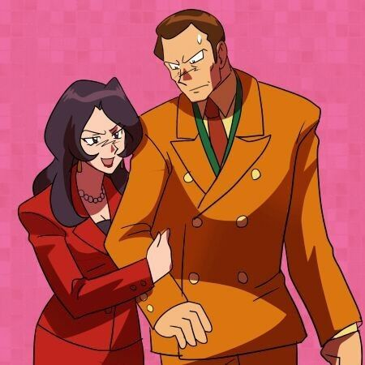
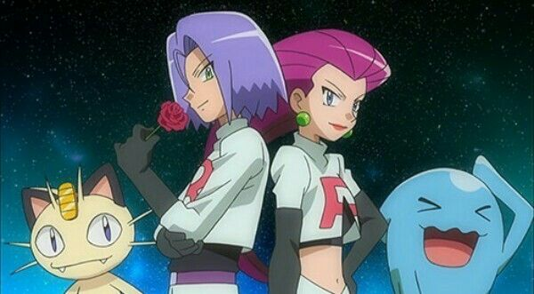
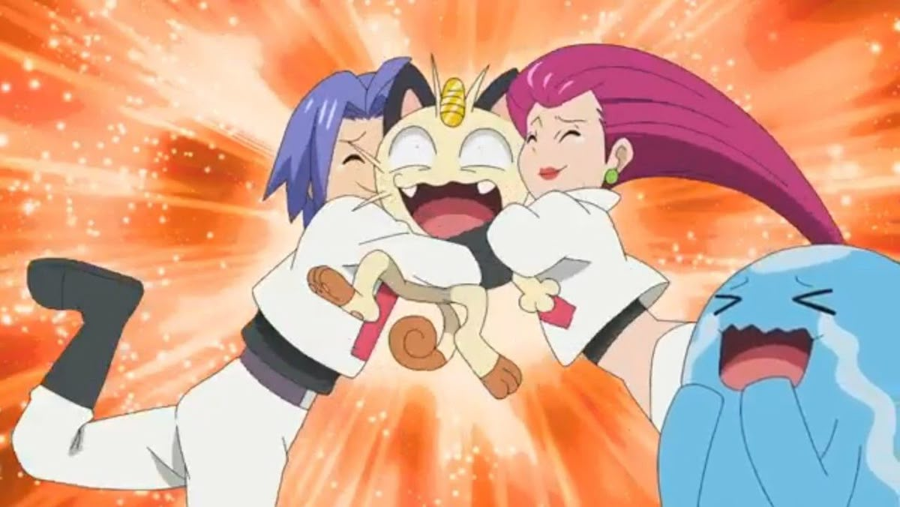
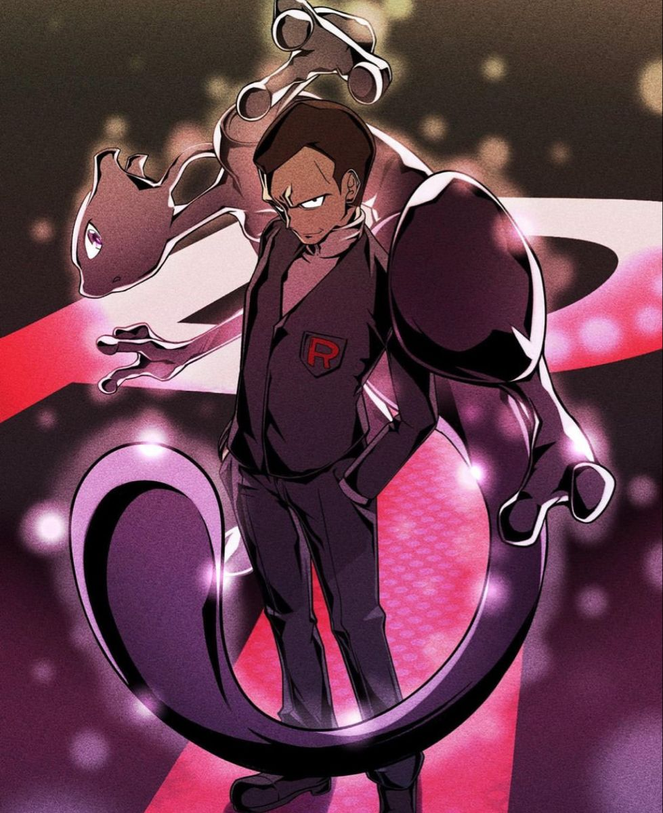
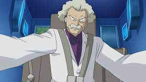
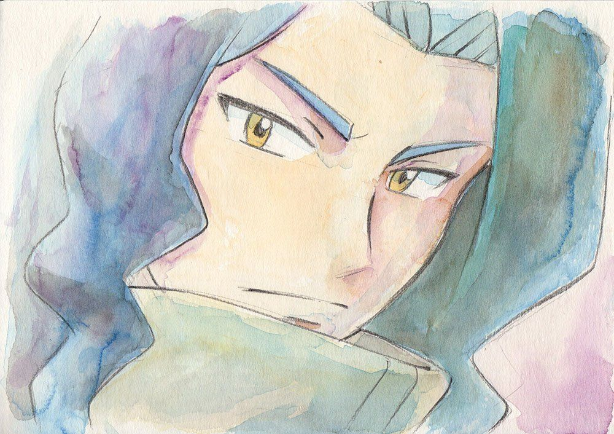

| PRESENTACIÓN | POKÉMON | ASH KETCHUM | PIKACHU DE ASH | FUENTES |
El Team Rocket en España o Equipo Rocket en Hispanoamérica (ロケット団 Roketto-dan en japonés) es una
asociación ilícita con fines criminales fundada por Madame Boss y que ahora está bajo el mando de su
hijo, Giovanni. Esta organización hace cualquier cosa con tal de ganar dinero. Su negocio más frecuente
es el de robar Pokémon para luego venderlos a precios elevados, como lo hacía la cazadora J.
Giovanni también quiere tener una colección de los Pokémon más fuertes del mundo y usa a su equipo para
hacerlo. La sede central se encuentra en la región Kanto; para ser más precisos, en Ciudad Verde, pero
el Team/Equipo Rocket cuenta con miembros activos en más regiones.
[Pokémon Wiki, s. f.]

Jessie y James son dos miembros muy determinados y persistentes de esta organización que viajan con un
Meowth parlante que su jefe les asignó. Meowth, a pesar de ser un Pokémon, parece ser el que más piensa
de estos tres, ya que muchos de los planes son suyos y él siempre opera la maquinaria pesada que usan
para robar Pokémon.
Sus nombres están basados en un ladrón muy conocido de Estados Unidos llamado Jesse James, forajido
estadounidense e integrante más famoso de la banda de asaltantes James-Younger.
Aparecen en casi todos los episodios de la serie, generalmente tratando de robar al Pikachu de Ash o a
los Pokémon que aparecen en el episodio, para presentárselos a Giovanni. Tienen un globo aerostático
(su principal medio de transporte) con aspecto de un Meowth o la de un Wobbuffet, y un submarino con
aspecto de un Magikarp o un Gyarados.
Cada intento termina en fracaso debido a las acciones de Ash y sus amigos, a los que ellos se suelen
referir como "los mocosos" (en España) o "los torpes/bobos" (en Hispanoamérica), los entrenadores y sus
Pokémon mostrados en cada episodio, y la propia incompetencia del trío (además de los fallos en sus
dispositivos mecánicos). Como consecuencia de esto, excepto en la serie Blanco y Negro, salen volando
mientras dicen la frase: "El Equipo Rocket ha sido vencido otra vez" en Hispanoamérica o "El Team Rocket
despega de nuevo" en España. En las temporadas 14 y 15, estos se las ingenian para escapar mediante
diversos métodos.


Giovanni es el líder del Team/Equipo Rocket y se ha hecho presente desde el inicio del anime. Siempre
tiene a su lado a su Persian, el cual odia al Meowth acompañante de Jessie y James.
Es el hijo de Madame Boss (la fundadora del Team/Equipo Rocket). Él quería mucho a su madre porque le
parecía una mujer hermosa, quizás por ello decidió seguir sus investigaciones acerca de Mew y de crear
al Pokémon más poderoso de todos, aunque fracasó ya que Mewtwo se escapó al ver que este lo utilizaba
en vez de querer ser su amigo.[Pokémon Wiki, s. f.]

El profesor Zager es un científico que aparece en Teselia, el encargado de investigar los poderes del
nuevo meteorito y de ayudar a Jessie, James y Meowth en muchas de sus misiones.
Su primera aparición es en el episodio ¡Scraggy, nacido para ser salvaje (ES) / ¡Scraggy, empollado
para ser salvaje! (HA), donde Pierce lo presenta a Jessie, James y Meowth. Tras eso, analiza el
meteorito robado, consiguiendo despertar la energía de su núcleo interno, tras eso insiste en una
investigación más profunda.

Es un agente de la región de Teselia, es el nuevo contacto de Jessie, James y Meowth, y el que les
informa de sus misiones. Pierce fue mencionado por primera vez en el episodio ¡El entrenamiento de
Axew! (ES) / ¡La flor está en Axew! (HA) ‹№› de la decimocuarta temporada, es enviado por Giovanni a
ayudar a Jessie, James y Meowth en la misión de conquistar la región Teselia.

Vídeo de Ash, Misty, Brock y pikachu despidiendo a Butterfree(fragmento de un capítulo del anime)
Cuarto Opening del anime pokémon
| REGRESAR | ANTERIOR | SIGUIENTE |